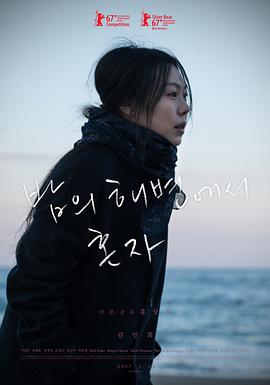
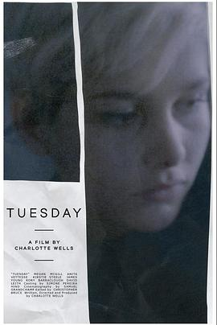
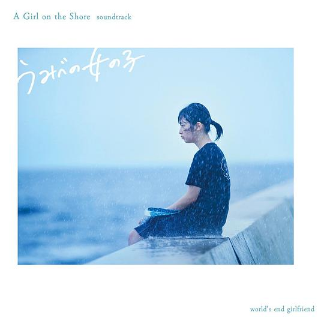
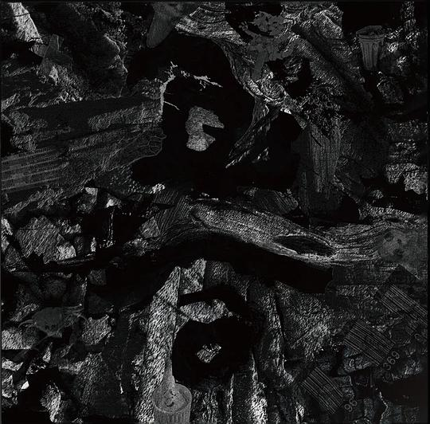
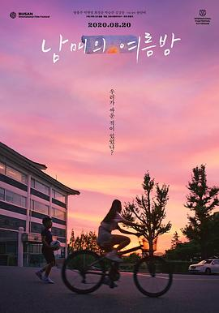

广播
共 65 个月
2293 条广播
其中 1543 条带正文
广播发布后不可编辑，所以每条都是那一刻的原话。
2026-06-30 15:26:07
豆瓣原页
看过 痴迷 / Obsession ★★★★☆
摄影和灯光好厉害，尤其Nikki二次进门的阴森眼神。整体是营造了一种很浓厚的惊悚氛围，却在录取通知书的车内jump消失了，因此最后更多的是对故事结局的关注，视觉上不怎么吓人了。男主好自私，明知她不是她只是皮囊还假假爱得深沉，那为什么开头表白时要强调对方的善良呢。可惜了败犬的女二。
2026-06-27 10:00:50
豆瓣原页
听过 芽吹くとき ★★★★☆
这张ep是真不错。喜欢《don’t》与《wet》。不紧不慢的腔调唱到心巴里了。
2026-06-26 22:16:07
豆瓣原页
看过 四渡 ★★★☆☆
真真拍得好有新鲜感，完全难以预料下一个镜头会给谁会拍什么。服化道看着不错。中间非对峙的而是打鲁班场的转场很不错。这下我真佩服陈凯歌了，至少他的电影里我看懂我是在打什么干什么了。老林演得真好，当时我课外调研就被王家烈给笑到了。老刘怎么一直在瞪眼。
2026-06-23 18:09:49
豆瓣原页
 想听 芽吹くとき
想听 芽吹くとき
2026-06-22 18:19:55
豆瓣原页
 想看 万事顺利 / 万事快調〈オール・グリーンズ〉
想看 万事顺利 / 万事快調〈オール・グリーンズ〉
2026-06-21 21:15:42
豆瓣原页
 读过 人体使用手册 ★★★★☆
读过 人体使用手册 ★★★★☆
闲着翻到嫂子在看的书，其中失眠的调解方法还中用与中听的。
2026-06-21 15:31:35
豆瓣原页
在读 人体使用手册 ★★★★☆
失眠的调解方法还中用与中听的。
2026-06-20 22:51:14
豆瓣原页
 看过 热带雨 ★★★★☆
看过 热带雨 ★★★★☆
28th SIFF，雨作为重要意象贯穿屏幕，的确给我带来了难忘的观影体验。老人与孩子的梦色调晕蓝，与“笑”一同压力了老师。而老师与学生本质是无处安放的母爱的代偿，最终学生对情感的单薄认知导致了他们畸形的爱情。倒是最后意料之内的怀上了是否说明了老公这几年捐的也许是假精呢，不想要可以直说，这样单纯地老师做什么呢，肚皮都淤紫了。陈导还真喜欢这样的拧巴情感。
2026-06-19 18:40:15
豆瓣原页
看过 玩具总动员5 / Toy Story 5 ★★★★☆
30年的IP故事还能与时俱进真是离谱，尤其胡迪的啤酒肚与地中海出来真是难绷。故事里没有绝对的坏人，但屏幕抓住人的场景看一次还是害怕一次，到底目的是好的，执行过程中出了差错。给孩子命名的那段蛮走心的。
2026-06-19 12:46:35
豆瓣原页
看过 啥是佩奇 ★★★★☆
对喜欢的人所喜欢之物的想了解这么个动力就已经很感人了。
2026-06-13 17:10:14
豆瓣原页
看过 银河特急 Milky✩Subway 各站停车前往剧场 / 銀河特急 ミルキー☆サブウェイ 各駅停車劇場行き ★★★★☆
大部分剧情和剧集一样，就是多了警察这边的几段故事线。每每看到最后的巨大列车侠真是难绷。主题曲在最后终于放完了真舒服。
2026-06-12 15:27:18
豆瓣原页
 看过 火遮眼 ★★★★★
看过 火遮眼 ★★★★★
从《东警3》我就意识到很多动作必须得在大银幕上看才有那种震撼的效果。这部真真是从头打到尾，谢苗虽然不讲话，但喘息声就足够迷人。丞威西装大长腿好帅哦。黎唯怎么这部还是傻白甜，最后混战的时候见谁打谁，绝对吨位可真可怕。队长极限一换一，终于对狗叔扳回了一局。动作流畅得像套招，但每一个动作都有很明确的目的性。只可惜时间太短了，我还想好好欣赏这场视觉盛宴啊盛宴。
2026-06-08 15:10:21
豆瓣原页
看过 未来的未来 / 未来のミライ ★★☆☆☆
极其优秀的作画资源却用来讲了一个非常莫名其妙的故事，真是可惜这样高质量的三渲二了。这样不讲理的小孩到最后甚至找了个所谓母亲过去的调皮来引起共鸣，完完全全忽视了发展观嘛！一个半小时太漫长！
2026-06-07 15:58:01
豆瓣原页

看过 独自在夜晚的海边 / 밤의 해변에서 혼자 ★★★★☆
没想到变焦镜头这么多，虽然可以保持场景的一致，但观感并不很好呀。镜头调度很一般，重心在表演与故事上了。第一段的结尾我很喜欢，间离得恰到好处。梦是相反的，爱而不得到最后一定得悔恨么，导演给不出答案的，因为他在现实里狠狠相爱了。我隔壁座的中老年夫妻的讨论很有意思，怕冷也许真是身体不太好哦。
2026-06-04 23:13:35
豆瓣原页

看过 星期二 / Tuesday ★★★☆☆
这里父亲的缺位比《晒后夏日》里还要明显。手持摄影多用特写，只是这小演员的表演实在经不起这么盯着注视着。
2026-06-04 12:13:34
豆瓣原页
 看过 分手的决心 / 헤어질 결심 ★★★★☆
看过 分手的决心 / 헤어질 결심 ★★★★☆
经典的相似物转场，但最喜欢人物直接在场式的转场。好些镜头真漂亮，比如同一焦平面的虚化，或者被双闪罩着的纱网下的刑警。汤唯真好看呀，尤其这里喜欢碎碎念时危险又迷人，只是中文重音错误多多，好不习惯的。影视剧里总是男人救女人，也许宋女士也一直在等谁来救救她吧。从开始两人的纠缠就是在相互暴露，不敢往前一步不敢戳破窗户纸的拉扯对峙博弈，唇膏这样的暧昧我看得好喜欢。海的意象多次出现，墙纸、话语、日记本封面和最后的消逝之地，好凄凉。
2026-06-03 15:32:30
豆瓣原页
 看过 电锯惊魂3 / Saw III ★★★☆☆
看过 电锯惊魂3 / Saw III ★★★☆☆
几场没有出路的闹剧看下来只觉得是虐杀而非前两部所谓重生救赎了。摄影与剪辑依旧上大分，但剧情实在不敢恭维。另外服化道也太强了，我几番生理厌恶。最后结束的BGM好经典了。
2026-05-31 18:13:52
豆瓣原页
 看过 诺曼底72小时 / Pressure ★★★★☆
看过 诺曼底72小时 / Pressure ★★★★☆
空镜很好看，故事讲得很干净利落。镜头的调度很见功力，最后的两度发现突转渐渐地浅浅地让我觉得和平真是来之不易。莫叔演得好好哦。里面每一个角色都好武断哦，助理小姐好眼熟hhh。不自觉地与不在一个成本的某部电影相比，疑惑我们为什么拍不出来呢。
2026-05-30 08:34:38
豆瓣原页
 在读 海子的诗 ★★★★★
在读 海子的诗 ★★★★★
短诗的精选集，没有《海上婚礼》。蓝星诗库的装帧真蛮好看的。开卷第一首《亚洲铜》就深抓我心，海子的文字流连着土地朴实的味道。
2026-05-29 22:31:31
豆瓣原页
收藏评论到豆列 理解 《铃芽之旅》废墟之上盛开的奇景——新海诚的十年下坠
2026-05-27 15:09:42
豆瓣原页
 看过 生活大爆炸 第五季 / The Big Bang Theory Season 5 ★★★★★
看过 生活大爆炸 第五季 / The Big Bang Theory Season 5 ★★★★★
Raj的包袱怎么这样抖出来的，真让人哭笑不得。ep13里真是为两个人捏把汗啊。和siri恋爱可真超前。ep20里Penny真是好哦。ep21没想到真把霍金给请来了。ep22的小插曲真是编排得太好了，Howard的一番真心话教人动容。ep23没事为什么要怼俄国人，不理解。ep24的gee成婚好浪漫，双方的誓词都好感人。
2026-05-26 20:46:48
豆瓣原页
 看过 鲸落
看过 鲸落
借2016的毕设作品。夜子的旋律很适合画面。
2026-05-26 16:51:02
豆瓣原页
 看过 夜班恶斗 / Night Shift ★★★★☆
看过 夜班恶斗 / Night Shift ★★★★☆
夜景拍得还蛮好看。几个长连贯的动作很有意思。
2026-05-25 10:39:47
豆瓣原页
 读过 文学少女的追想画廊 01 ★★★★★
读过 文学少女的追想画廊 01 ★★★★★
好多神之插图。最后的特别短篇看得我热泪盈眶。比较喜欢对正篇引用书籍与其评价的集合。
2026-05-24 23:11:37
豆瓣原页
收藏小组讨论到豆列 收藏
各位组员们，盼星星盼月亮，我组的专属答题活动终于来啦！《生活大爆炸》十级学者统一考试正式上线，TBBT粉们快来踊跃参与，看看大家能得多少分？
成功通过考试的组员（取得30分及以上），可以获得专属挂件——谢耳朵T恤！速速挂起来吧！
同时感谢广大组员们对于考试题目的积极贡献，比心！
不能答题的组员， 请点击链接将豆瓣App更新至最新版本。


2026-05-24 23:09:07
豆瓣原页
收藏小组讨论到豆列 理解 生活大爆炸中提到的剧/电影
2026-05-23 23:43:25
豆瓣原页
 看过 电锯惊魂2 / Saw II ★★★★☆
看过 电锯惊魂2 / Saw II ★★★★☆
反转反转再反转，看得太过瘾。其实抛开竖锯的作为，其思想还是可以理解的：人只有失去过才懂得珍惜啊。剪辑上大分，有些转场效果很棒。
2026-05-23 16:05:26
豆瓣原页
 看过 普通事故 / یک تصادف ساده ★★★★★
看过 普通事故 / یک تصادف ساده ★★★★★
开场的长镜头浓进夜色里我甚至看不出摄像机的运动，而中段与最后的定场长镜头更是由于演员的发挥看得我神乎其神。全片几乎没有配乐，但对情绪的把握与烘托全是由镜头来完成的，加之拍摄环境艰苦，足以见导演功力之深。关于政治方面没法评价，因为对伊朗政治环境不怎么了解。倒是最后一幕的声音设计太出色，看得我十分压抑。
2026-05-22 23:19:30
豆瓣原页
 看过 追逐繁星的孩子 / 星を追う子ども ★★★☆☆
看过 追逐繁星的孩子 / 星を追う子ども ★★★☆☆
真是有宫老的形但没宫老的功力啊，要讲的东西太多导致人物的进场与出场以及相关的行为转变得太快招致叙事的空浮。看得出来诚哥并不是想讲一份童话，虽然人设也比较幼态，但毕竟有不少令人不适的地方，同时也能看到后期作品的大部分影子，比如冒险、环形山、异世界或者长发男。开头摄像机的运动很值得说道说道，背动真是好厉害。瞬君无论说的话还是星空下的坐姿也太像渚薰了吧！😂。生与死的追问果然太庞大，诚哥没把握住，只草草地给出了“带着不幸活下去，放下过去也是一种祝福”的中庸答卷。
2026-05-21 14:25:04
豆瓣原页
 在读 文学少女 爱恋插话集 02 ★★★★☆
在读 文学少女 爱恋插话集 02 ★★★★☆
还是可惜琴吹小姐的爱情啊。震惊首页彩图的泳装。
2026-05-20 19:42:07
豆瓣原页
 读过 文学少女 爱恋插话集 01 ★★★★☆
读过 文学少女 爱恋插话集 01 ★★★★☆
开篇的小番外就差点乐坏我。流人的那篇看得很欢乐。但短篇集果然没正传淋漓啊。
2026-05-20 15:35:01
豆瓣原页
 看过 昨日青春 / Happyend ★★★★☆
看过 昨日青春 / Happyend ★★★★☆
开头的配乐好震撼，整篇的配乐导演都很有考究，大部分使用了古典钢琴，甚至通过角色之之口点出了如今的音乐远不比过去的动听。不愧是音乐家的孩子。但同时，错乱中的灯投下的影子也是导演的天才时刻。最喜欢用拖把画地为牢后的不直观的暧昧。长毛时时刻刻在说的及时行乐却因为现实的政治处处碰壁，到底是他没认清政治与每个人息息相关的本质，所以他最后独自承担也是成长的一部分。倒是寸头他的出发点是因为身份政治问题所去游行示威，最后却不知道自己想要的是什么。
2026-05-19 22:16:58
豆瓣原页
 看过 爱犬莫福 / Merv ★★★☆☆
看过 爱犬莫福 / Merv ★★★☆☆
译名其实可以更好听些。开篇的长镜头技术力还蛮高的。人类果然不能失去狗狗啊，就是剧情倘使能精简至一小时半里就好。btw，导演的歌品还是不错的。
2026-05-19 17:00:02
豆瓣原页
在读 文学少女 爱恋插话集 01 ★★★★☆
开篇的小番外就差点乐坏我。
2026-05-19 16:18:48
豆瓣原页
 在听 辞职信 ★★★★☆
在听 辞职信 ★★★★☆
左手和右走可能没什么含义吧。旋律依然动听。
2026-05-19 15:36:19
豆瓣原页
 在听 結束バンド ★★★★☆
在听 結束バンド ★★★★☆
乐器各司其职，这才是高中生乐队的魅力啊。
2026-05-19 14:52:31
豆瓣原页
 看过 中邪 ★★★★☆
看过 中邪 ★★★★☆
背景声里持续的电流声，不断的狗吠与鸡鸣，氛围感做得很不错，最后的确让我的鸡皮疙瘩起来了。结尾可圈可点吧。
2026-05-18 23:05:22
豆瓣原页
 看过 怪物之子 / バケモノの子 ★★★★☆
看过 怪物之子 / バケモノの子 ★★★★☆
动作戏的动态画得太好了，打戏看得很舒服。结尾的本质依旧是儿子弑父后才获得的成长，这样也使与自己亲生父亲生活在一起有了合理的动机。但熊大才是最值得说道说道的那位主角，无父无母的他的成长轨迹到底更亮眼。意外《白鲸》作为线索的存在，听过马尔克斯的推荐，但没时间拜读。长老被刀吓到的那卡笑喷了。
2026-05-17 22:31:23
豆瓣原页
 看过 岁月的童话 / おもひでぽろぽろ ★★★☆☆
看过 岁月的童话 / おもひでぽろぽろ ★★★☆☆
喜欢几次镜头给到过去的转场，惊叹转角下小孩走着走着飞上天的神来之笔。但故事娓娓道来的却是虚伪，讲故事的人总会有什么藏着没说的。对农村生活的热爱也仅仅浮于皮毛，婚后生活之所以没拍是因为注定不圆满。讨厌角色设计，苹果肌就不该画出来，像背景美术一样适当地留白不好么，尤其迎接主角时站桩的笑眯眯最渗人。意外益生菌的配音演出。
2026-05-16 23:22:36
豆瓣原页
 看过 突袭2：暴徒 / The Raid 2: Berandal ★★★★☆
看过 突袭2：暴徒 / The Raid 2: Berandal ★★★★☆
预算上来后片尾好看多了，只是文戏不是背景，应该是一场接着一场战斗的合理化，剧本的野心太大，也没拍出日本组与组斗争的戏剧度来。泥地的长镜头有些剪辑点太明显。长发老爷爷原来演的不是一个角色，我还以为又复活了呢。倒是下雪的奇观场面很精彩。车顶的视角很少见。车厢战软绵绵的不好看。最后也没看懂究竟怎么回事，意外龙平的客串。总体上没第一部紧凑，动作设计上也没第一部深刻了。
2026-05-15 22:51:38
豆瓣原页
 看过 突袭 / The Raid ★★★★☆
看过 突袭 / The Raid ★★★★☆
剧情太无脑，只是对队长这么菜感到意外。喜欢兄弟1v2的动作设计，弟弟一直在关键时刻补刀或者救哥哥一把，就如最后也救了哥哥出去。镜头设计也很有意思，不安感瞬间就上来了。总之抛开合理，有人愿意打给我看我就很开心了。(o^^o)
2026-05-14 20:43:20
豆瓣原页
 读过 文学少女 08 ★★★★☆
读过 文学少女 08 ★★★★☆
心叶你怎么就是不懂啊，这样三心二意对如此愿意帮你的琴吹同学很糟糕啊！美羽看热闹不觉事大，拱火真厉害。琴吹同学果然还是太好了。不过故意杀人真的不会刑事立案么。最后的代理叙述果然没让我失望，一环套这一环，一面翻过一面，很精彩。所有的相遇皆是必然啊。对《窄门》的理解实话讲有些肤浅了。
2026-05-14 17:23:25
豆瓣原页
 读过 文学少女 07 ★★★★★
读过 文学少女 07 ★★★★★
居然是以《窄门》为蓝本的。这样对琴吹同学真的公平么。琴吹同学也太好了吧。对学姐身份的转变感到意外，却从第一卷开始细想也获得过去。
2026-05-14 12:25:20
豆瓣原页
想看 火遮眼
2026-05-12 17:31:37
豆瓣原页
在读 文学少女 07 ★★★★★
居然是以《窄门》为蓝本的。
2026-05-12 14:34:32
豆瓣原页
 听过 千年女優 オリジナルサウンドトラック ★★★★★
听过 千年女優 オリジナルサウンドトラック ★★★★★
喜欢lotus2。
2026-05-12 14:33:46
豆瓣原页
 听过 海がきこえる ★★★★★
听过 海がきこえる ★★★★★
年少错把小号当萨克斯。
2026-05-12 10:53:28
豆瓣原页
 想读 玛侬·列斯戈
想读 玛侬·列斯戈
2026-05-12 10:43:22
豆瓣原页
 读过 文学少女 06 ★★★★☆
读过 文学少女 06 ★★★★☆
为什么会有两种形式的注释？
2026-05-11 16:27:59
豆瓣原页
 读过 文学少女 05 ★★★★☆
读过 文学少女 05 ★★★★☆
心叶就这样被玩弄在股掌之中么。我去真是腹黑啊，高潮一波又一波的，看得真爽啊！居然又有男人打架也有女人打架。我想当美羽小姐的狗。(´･ω･`)结尾好炸裂！
2026-05-09 17:20:26
豆瓣原页
在读 文学少女 05 ★★★★☆
心叶就这样被玩弄在股掌之中么。
2026-05-09 11:38:09
豆瓣原页
 读过 文学少女 04 ★★★★☆
读过 文学少女 04 ★★★★☆
老师也真是太不正经了。七濑同学真是可爱捏。没想到败犬到最后才确定下来。
2026-05-08 20:30:18
豆瓣原页
 看过 真人快打2 / Mortal Kombat 2 ★★★☆☆
看过 真人快打2 / Mortal Kombat 2 ★★★☆☆
没想到“无删改”居然成了我去看这部电影的最大噱头。其实对游戏一无所知，单纯去过个眼瘾，这部分是合格的。但剧情上漏洞大了去了，明明那个机械臂哥们儿不用死的，刘康那时候跑哪去了。最后的平行打斗还算可以，最后的DJ还蛮好听的。没想到IMAX画幅还能虚晃一枪。😂。
2026-05-07 23:11:37
豆瓣原页
 看过 爱情抓马 / The Drama ★★★★☆
看过 爱情抓马 / The Drama ★★★★☆
我要看的就是这样就算乱七八糟也要抛开一切勇敢去爱去接纳对方的爱情故事啊。虽然影片抛出了这样一个大的社会议题并且不给出任何的回答甚至结尾对所谓这样犯罪的标签处理得很不好，但情侣间不断扮演的重新开始也是一种答案，一切没到无可挽回的地步时还是可以重新开始的。伴郎是真兄弟啊。我喜欢胶片摄影所带来的粗粝感，也喜欢封面闪光时的红眼。剪辑挺会蒙太奇的，效果还不错。中意赞达亚出现时沉闷的声音设计。
2026-05-07 17:28:56
豆瓣原页
在读 文学少女 04 ★★★★☆
老师也真是太不正经了。七濑同学真是可爱捏。
2026-05-07 14:51:02
豆瓣原页
 读过 下垂眼4 ★★★★★
读过 下垂眼4 ★★★★★
封面很好看，这一本是图书馆的独苗了。
2026-05-07 14:24:10
豆瓣原页
在读 下垂眼4 ★★★★★
封面很好看，这一本是图书馆的独苗了。
2026-05-07 11:42:33
豆瓣原页
 读过 下垂眼 Vol.3 ★★★★★
读过 下垂眼 Vol.3 ★★★★★
没想到蛮多黄段子的。_(:з」∠)_
2026-05-07 11:20:40
豆瓣原页
在读 下垂眼 Vol.3 ★★★★★
没想到蛮多黄段子的。_(:з」∠)_
2026-05-03 10:25:06
豆瓣原页
 读过 下垂眼VOL.2 ★★★★★
读过 下垂眼VOL.2 ★★★★★
第二册本以为能借到手，结果辗转还是在公众号看的全文，没收录日记真是可惜哦。
2026-05-02 21:22:56
豆瓣原页
在读 下垂眼VOL.2 ★★★★★
第二册本以为能借到手，结果辗转还是在公众号看的全文。
2026-04-27 19:25:14
豆瓣原页
 看过 上伊那牡丹，醉姿如百合 / 上伊那ぼたん、酔へる姿は百合の花 ★★★★☆
看过 上伊那牡丹，醉姿如百合 / 上伊那ぼたん、酔へる姿は百合の花 ★★★★☆
摄影太恐怖，连人物入镜时焦点从背景上的转换都很自然。配乐蛮好听的。社长的声音总让我幻视onimai。op的演出太精彩，深居我心了。上大学开始学抽烟喝酒，也是很有前途了。
2026-04-27 18:12:10
豆瓣原页
 读过 下垂眼 ★★★★★
读过 下垂眼 ★★★★★
四格与日记的搭配使经典的故事看上去更新颖有趣了。真是颇有早期互联网的单纯的遗风。
2026-04-27 10:45:33
豆瓣原页
在读 下垂眼 ★★★★★
四格与日记的搭配使经典的故事看上去更新颖有趣了。
2026-04-26 23:25:33
豆瓣原页
 看过 零点零一公分的距离 / 零點零一公分的距離 ★★★★☆
看过 零点零一公分的距离 / 零點零一公分的距離 ★★★★☆
张震与张国荣跨越二十年的重逢教人动容，没想到还有胎死腹中的《北京之夏》的事情。以“蛋”为主题做的短片的确很契合，剪辑手法很值得学习。
2026-04-26 16:43:28
豆瓣原页
 看过 恋恋笔记本 / The Notebook ★★★★☆
看过 恋恋笔记本 / The Notebook ★★★★☆
真是老派的跨越阶级的爱情故事，但对配角的棉花之子来说颇有些过于残忍了。高司令痞帅痞帅的，虽然女主没把握好约定的重要性，但最后两位老人的厮守蛮令人触动的。胶片摄影挺好看的。
2026-04-25 15:27:24
豆瓣原页
 看过 世界的主人 / 세계의 주인 ★★★★★
看过 世界的主人 / 세계의 주인 ★★★★★
镜头用得太克制，配乐也是如此。在洗车间的呐喊里我见到了属于导演的天才时刻，只是有段母亲在车内与朋友视频通话独饮时手机突然没电了直照着母亲脸庞有点稍显刻意。体育课的老师也太双标了吧，为什么第一次珠恩勒住男同学的脖子时老师不喊停呢。上诉的那段检方的问询有些过于离谱了，这么看我国目前的“非亲历不可知细节”到最后也会像韩方一样难以举证了。故事真的挺精巧的，尤其最后是不同人声念出的纸条。好喜欢默默守护姐姐的小孩哥，只是他知不知道大扫除时候他有一只袜子给弄到洗衣机后面了。_(¦3」∠)_。
2026-04-24 17:00:05
豆瓣原页
 读过 我本芬芳 ★★★☆☆
读过 我本芬芳 ★★★☆☆
本来《秋园》还是暗戳戳地讲女性苦难叙事，到这一本就直接不装了，明晃晃地摆明了。不喜欢对地名使用字母替代的行为。心里想着结婚不该是这样却不去沟通整天胡思乱想。下放劳改又不是坏事一桩，也是自己选择了结婚这条道路。整篇矫揉造作。吕这个人我好像听说过，也似乎见识过。
2026-04-23 18:44:23
豆瓣原页
 在读 爱丽丝漫游奇境 ★★★★☆
在读 爱丽丝漫游奇境 ★★★★☆
导语讲得蛮好，主要是插画加大分。(o^^o)
2026-04-23 17:16:47
豆瓣原页
 读过 文学少女 03 ★★★★☆
读过 文学少女 03 ★★★★☆
首刷的第十页第七段的首行缩进居然只有一个全角空格！故事里有天然呆的学妹、傲娇的同班同学、想一出是一出的学姐，真是太好哦。我要看的就是纠缠不清的爱情啊！最终戏剧的蒙太奇写得太好，使人物心境的变化合理化了。没想到在美羽身上还有伏笔。大正浪漫同意是明黄色了，封面的学姐可爱捏。
2026-04-23 11:36:34
豆瓣原页
在读 文学少女 03 ★★★★☆
首刷的第十页第七段的首行缩进居然只有一个全角空格！故事里有天然呆的学妹、傲娇的同班同学、想一出是一出的学姐，真是太好哦。
2026-04-21 17:32:01
豆瓣原页
 读过 文学少女 02 ★★★★★
读过 文学少女 02 ★★★★★
注释倒是蛮用心的。流人似乎是个m属性啊otz。我要看的就是这样爱恨交织的狗血故事啊！真敬佩敢于写死角色的作者，使得本书与往常轻小说相比真有些不同了。
2026-04-20 13:56:57
豆瓣原页
在读 文学少女 02 ★★★★☆
注释倒是蛮用心的。
2026-04-19 23:49:11
豆瓣原页
 在读 这些人，那些事 ★★★★★
在读 这些人，那些事 ★★★★★
吴老师的文字真是随意有力啊。
2026-04-19 18:10:50
豆瓣原页
 看过 目中无人2 ★★★★☆
看过 目中无人2 ★★★★☆
比起第一部来说好不少，摄影也有了质感，很多空镜真真十分美丽。只是美术能考虑到色彩对于打斗的重要性就好了，毕竟每人都穿的是朴素的古装。最后的群像打戏不好看，甚至在对战泄了气，可惜。杨恩又演得真是好哦，拿捏得很传神。
2026-04-19 09:22:01
豆瓣原页
转发
恭喜呀。(o^^o)


2026-04-19 09:21:44
豆瓣原页
 想读 妄想是我们共有的秘密
想读 妄想是我们共有的秘密
车车。
2026-04-18 16:42:30
豆瓣原页
 看过 哥斯拉-1.0 / ゴジラ-1.0 ★★★☆☆
看过 哥斯拉-1.0 / ゴジラ-1.0 ★★★☆☆
只能说无功无过让我单纯过个视效的眼瘾，但是在虚拟的故事仍追求真实的历史是否有些难评了呢。没想到负片版不是简单的黑白反转。喜欢哥斯拉的蓝色光波。
2026-04-17 16:05:32
豆瓣原页
 读过 渴望死亡的小丑 ★★★★☆
读过 渴望死亡的小丑 ★★★★☆
开头真是超级虚假的幻想啊。没想到是严肃的犯罪小说，情节上蒙太奇用得太顺手了。眼花但是不乱。
2026-04-15 19:30:06
豆瓣原页
 在玩 绿色地狱 Green Hell ★★★☆☆
在玩 绿色地狱 Green Hell ★★★☆☆
和孙权一起玩的，他邀请的我。里面一些合成元素、收集的玩法都挺不错的，我只是受不了所谓的“捕猎”原住民。
2026-04-14 17:38:36
豆瓣原页
在读 渴望死亡的小丑 ★★★★☆
开头真是超级虚假的幻想啊。
2026-04-14 14:30:08
豆瓣原页
 看过 薄暮 ★★★☆☆
看过 薄暮 ★★★☆☆
开头的太阳光辉的演出证明了宽叔的实力尚存，但奈何资金单薄画面也太过单调，以至于正式的四重奏到最后用起了ppt。其中不太理解的是地震这般宏大叙事在这里对男女主身份强调的作用，难道是乡愁么？我实在看不出来。最不能理解的杀必死镜头，一点用处没有，福利也太明显了。另外就是角色的人设都太刻板了，没意思。最后的最后，女孩子们到底在臭什么啊。看见团长、阿虚和大明神了。
2026-04-13 21:48:48
豆瓣原页
 读过 回忆爱玛侬 ★★★★★
读过 回忆爱玛侬 ★★★★★
中信这次的印刷质量还真不错。分镜的透视功底太强了，很有摄影意识，有几个正反打没有越轴。重点是故事上，一讲徐徐道来的传奇，我便开始走心。emanon在苍穹一粟下的大跨页真是太漂亮了。真是充满故事的大姐姐哦。
2026-04-13 14:56:05
豆瓣原页
读过 我本芬芳 ★★★☆☆
本来《秋园》还是暗戳戳地讲女性苦恼叙事，到这一本就直接不装了，明晃晃地摆明了。不喜欢对地名使用字母替代的行为。心里想着结婚不该是这样却不去沟通整天胡思乱想。下放劳改又不是坏事一桩，也是自己选择了结婚这条道路。整篇矫揉造作。吕这个人我好像听说过，也似乎见识过。
2026-04-13 14:00:01
豆瓣原页
在读 回忆爱玛侬 ★★★★★
中信这次的印刷质量还真不错。分镜的透视功底太强了，很有摄影意识，有几个正反打没有越轴。重点是故事上，一讲徐徐道来的传奇，我便开始走心。
2026-04-13 11:49:25
豆瓣原页
 听过 Lilac ★★★★☆
听过 Lilac ★★★★☆
专辑的概念设计很好看。喜欢第五首。
2026-04-13 11:49:12
豆瓣原页
 在听 每到夜里我就很饿 ★★★★☆
在听 每到夜里我就很饿 ★★★★☆
这时候的编曲还很简单。
2026-04-13 11:13:33
豆瓣原页
 听过 Fondle ★★★★☆
听过 Fondle ★★★★☆
喜欢各首的桥段与带来的氛围。《1960》之后有段奇怪的声音。真正意义上的声墙。
2026-04-13 10:37:15
豆瓣原页
 听过 第二集 ★★★★☆
听过 第二集 ★★★★☆
借。实体专多了两首，尤其中意多的第一首。想一阵梦一样。
2026-04-13 10:35:22
豆瓣原页
在听 Fondle ★★★★☆
喜欢各首的桥段与带来的氛围。
2026-04-13 10:31:28
豆瓣原页
 听过 Kabutomushi ★★★★☆
听过 Kabutomushi ★★★★☆
第一首的编曲就是很经典的爵士味。只是不太能理解双语夹杂的歌词究竟对谁是受众。喜欢takaramono与inaka。
2026-04-13 10:16:42
豆瓣原页
在听 Kabutomushi ★★★★☆
第一首的编曲就是很经典的爵士味。只是不太能理解双语夹杂的歌词究竟对谁是受众。
2026-04-12 23:06:10
豆瓣原页
 看过 葬送的芙莉莲 第二季 / 葬送のフリーレン 第2期 ★★★★☆
看过 葬送的芙莉莲 第二季 / 葬送のフリーレン 第2期 ★★★★☆
ep29所谓原创的部分并没有多少出色的地方，标题的重新表现也只是多了一些花瓣。到底是圣斋藤给我口味养刁了么。ep31的结尾停得蛮好的。ep35的寻找魔族的pov镜头蛮有意思的。ep36与ep37的两段pov也很好呀，一段是指南针的蒙太奇，一段则是勇者的目光总是会出现精灵的身影，尤其最后目光交接镜头反打勇者时，鼻头一阵酸胀。结尾在为黄金乡造势哦。
2026-04-11 20:00:25
豆瓣原页
收藏日记到豆列 留恋 The Capital of Poland is Shanghai
2026-04-10 21:34:29
豆瓣原页
 听过 不安灵魂收容所 ★★★☆☆
听过 不安灵魂收容所 ★★★☆☆
听过现场后更能确定原曲的混音有问题。
2026-04-09 14:24:41
豆瓣原页
在读 我本芬芳 ★★★☆☆
本来《秋园》还是暗戳戳地讲女性苦恼叙事，到这一本就直接不装了，明晃晃地摆明了。不喜欢对地名使用字母替代的行为。
2026-04-09 13:55:53
豆瓣原页
 读过 房思琪的初恋乐园 ★★★★★
读过 房思琪的初恋乐园 ★★★★★
精装版，后面多了篇婚礼致辞。内封上看不懂的涂鸦，看得我很难过。再读时里面大部分引用的文学作品已经读过了，故事的理解、比喻的拟态、种种种种的文字教我好难受。思琪在受害的时候完全是解离的状态啊。好些人的家庭背景还蛮中产的。毛毛卑微的字里行间教人心疼，这才是在爱而不得状态下的普通人。被封面带偏，更容易被忽视的是一维的家暴事实。作者很喜欢非传统的第三人称写作，一些重复的仿佛心里话的词句总能不经意让人以为是自述的状态。伊纹与一维从读音来讲便是一丘之貉了。喜欢从伊纹口中脱出毛毛的名之后毛先生以全名的姿态出现在小说中的神来之笔。马卡龙、手冲咖啡和进口文具仿佛精挑细选的譬喻一样。
2026-04-08 17:51:01
豆瓣原页
 读过 放學後回家小確幸 1 ★★★★★
读过 放學後回家小確幸 1 ★★★★★
翻译水平中上，到底更中意“浪漫俯拾皆是”的说法。首刷特典和日版一致。童真的学姐真是我的理想呀。
2026-04-08 17:48:20
豆瓣原页
在读 放學後回家小確幸 1 ★★★★★
翻译水平中上，到底更中意“浪漫俯拾皆是”的说法。首刷特典和日版一致。童真的学姐真是我的理想呀。
2026-04-08 15:50:31
豆瓣原页
 看过 目中无人 ★★★☆☆
看过 目中无人 ★★★☆☆
置景与美术很漂亮，好多空镜的摄影教我眼前一亮。可惜剧情单薄的同时作为亮点的动作也不太好看，本以为最终的雪之战会如何如何，结果也只是简简单单地干掉了坏蛋。因此无法理解为何拖累琴娘，显得她尤其工具人属性。谢苗本来眼睛就标致，这下连颜粉都吃不到好的。
2026-04-05 19:08:50
豆瓣原页
 看过 南京照相馆 ★★★☆☆
看过 南京照相馆 ★★★☆☆
喜欢装胶卷类比装子弹的蒙太奇。高姐姐讲起沪语来真是嗲嗲的，尤其得瑟自己的电影时的神情好好看。中正的脸上都是麻子真是笑死我了。但是整部电影里的摄影调度真是稀烂啊，第一步申奥的电影结果是这样的一部，也就是故事可以讨论讨论了。广海是这样的不知好歹的骑墙派，也是第一批倒下的罪人，同理的伊藤也是这样的货色，不过是前者听到“いぬ”才得知被骗，后者是骗人的小狗。特别提及的是最后反转相片的意境，配上小国小民的吉祥更值得关注。
2026-04-02 21:15:51
豆瓣原页
在读 房思琪的初恋乐园 ★★★★★
精装版，后面多了篇婚礼致辞。内封上看不懂的涂鸦，看得我很难过。再读时里面大部分引用的文学作品已经读过了，故事的理解、比喻的拟态、种种种种的文字教我好难受。思琪在受害的时候完全是解离的状态啊。好些人的家庭背景还蛮中产的。毛毛卑微的字里行间教人心疼，这才是在爱而不得状态下的普通人。被封面带偏，更容易被忽视的是一维的家暴事实。作者很喜欢非传统的第三人称写作，一些重复的仿佛心里话的词句总能不经意让人以为是自述的状态。
2026-03-31 15:23:47
豆瓣原页
 看过 次强音 / MEZZO FORTE ★★★★☆
看过 次强音 / MEZZO FORTE ★★★★☆
一共上下两回，两次结尾都意外引人，但到底篇幅有限，很多坑都没来得及填。两集里总有时长不断的别扭色情戏，实在浪费了。梅津的动作分镜还是太强悍了，连续性教人一目了然。不明白从这至之后的一切故事为什么总有人形机器人，这是梅津的xp么。
2026-03-30 23:11:16
豆瓣原页
 看过 通往夏天的隧道，再见的出口 / 夏へのトンネル、さよならの出口 ★★★☆☆
看过 通往夏天的隧道，再见的出口 / 夏へのトンネル、さよならの出口 ★★★☆☆
剧情上槽点太多，根本没规划好角色的未来，太草率。但女主我是真喜欢，被霸凌了直接一拳上去真干脆，之后又成了大八岁的大姐姐，真好呀。最走心不过收到来自未来短信的时候与十秒不过六个半小时的吻。
2026-03-30 17:26:11
豆瓣原页
 看过 维珍朋克：发条女孩 / ヴァージン・パンク Clockwork Girl ★★★★☆
看过 维珍朋克：发条女孩 / ヴァージン・パンク Clockwork Girl ★★★★☆
分镜强得无敌，看梅津的打斗真是愉悦啊。只是后续又得什么时候出来呢。
2026-03-30 00:15:33
豆瓣原页
 看过 小丑2：双重妄想 / Joker: Folie à Deux ★★★☆☆
看过 小丑2：双重妄想 / Joker: Folie à Deux ★★★☆☆
摄影很漂亮，逃离的长镜头很有亮点，好奇是怎么如此顺滑地钻进车里拍摄的。但不能理解画幅变换的作用，一会儿是指明是歌舞镜头，一会儿又用来给城市全景。但不得不说歌舞的美术太强了，观感真是无敌，只是总的看起来节奏有了问题，整体上怪怪的感觉。华金演得太好了，完全演出了Author只是Author的感觉，gaga唱得也不错。喜欢背景里萨克斯吹奏的《fly me to the moon》。
2026-03-29 09:51:03
豆瓣原页

听过 うみべの女の子 オリジナル・サウンドトラック ★★★★☆
配乐在花样的镜头下反倒显得格外克制。喜欢《When I touch your cheek》。没想到还有一首旧曲《girl》。
2026-03-29 09:50:10
豆瓣原页

听过 瓦合 ★★★★☆
我倒是蛮喜欢《床》。所有歌听着都耳熟，大概是受了二弟潜移默化的影响，他很喜欢草东。
2026-03-29 09:49:44
豆瓣原页

想看 姐弟的夏夜 / 남매의 여름밤
2026-03-27 23:50:49
豆瓣原页
 看过 拆弹专家2 ★★★★☆
看过 拆弹专家2 ★★★★☆
剧情上居然有着二重反转，况且还能圆回去，真是不容易。这一部是邱导的正常水平了，只是用感情骗叛徒真是难以评价，摊上这么个好兄弟。
2026-03-26 11:49:47
豆瓣原页
在读 房思琪的初恋乐园 ★★★★★
精装版，后面多了篇婚礼致辞。内封上看不懂的涂鸦，看得我很难过。再读时里面大部分引用的文学作品已经读过了，故事的理解、比喻的拟态、种种种种的文字教我好难受。
2026-03-25 16:44:18
豆瓣原页
 看过 悲情三角 / Triangle of Sadness ★★★★☆
看过 悲情三角 / Triangle of Sadness ★★★★☆
Karl一直在争论着什么，他不想得到结果，他只是想争论罢了。女色容易政治不正确，于是导演写了男色换食物，好玩。最后队长想杀Yaya的原因大抵就是自己好不容易创造的母系社会要被资本主义社会收编了，自己又要变成管理员了。厨房放着国际歌时就能猜出船长是什么成分了。
2026-03-24 23:22:25
豆瓣原页
 看过 告别有情天 / The Remains of the Day ★★★★☆
看过 告别有情天 / The Remains of the Day ★★★★☆
服化道很漂亮，没想到这时候的休叔这么年轻水嫩。但镜头没办法很好地体现石黑一雄笔下“不可靠叙事”的魅力，只在最后长廊交谈时给我一点内心触动。其实没有两情相悦肯顿小姐与史蒂芬都有错，都在逃避皆藏着掖着没讲出接下来的最重要的一句话。史蒂芬甚至最后还在逃避到工作中。
2026-03-24 17:28:23
豆瓣原页
 读过 大象席地而坐 ★★★★☆
读过 大象席地而坐 ★★★★☆
剧本刚开始读就力竭了。从文本角度分析这些配角的话，无一例外都是在反驳反驳反驳。对多线叙事的掌握很熟稔。这么看黄玲的母亲最后还是在维护自己的女儿的。导演在写黄玲时能看出对演员的维护了，还好没直接描写师生之间的丑陋，反倒现在更有余味了。小说也很喜欢草蛇灰线地徐徐讲出每个人的具体，不同视角的转变但是生硬。
2026-03-24 10:43:50
豆瓣原页
收藏评论到豆列 留恋 《挽救计划》之前，高司令还演过哪些大片？
2026-03-23 21:51:15
豆瓣原页
 玩过 人类：一败涂地 Human: Fall Flat ★★★★☆
玩过 人类：一败涂地 Human: Fall Flat ★★★★☆
操作很不跟手，物理引擎真实却又莫名其妙。在一些不知道怎么接下去的时候总是意外跳关，这点我倒是蛮欣赏的，没有一点空气墙。解密中要思考的还蛮多的，有一些谜题解出来是真是豁然开朗，但也有些很考验手速就是了。大部分时间都在搞我心态。好玩但不会玩第二遍。
2026-03-20 21:50:49
豆瓣原页
 看过 挽救计划 / Project Hail Mary ★★★★☆
看过 挽救计划 / Project Hail Mary ★★★★☆
视效做得很不错，虽然剧情上硬伤仍然不少，但看高司令那张帅脸拯救世界依然让我开心不已。btw，我看的这个影厅一开始放映出故障，一闪一烁的，还真以为是影片这么开场来着。_(:з」∠)_
2026-03-20 13:27:13
豆瓣原页
听过 Illumination ★★★☆☆
还不如写rnb。
2026-03-18 00:10:09
豆瓣原页
 看过 伤物语 -历与吸血鬼- / 傷物語 -こよみヴァンプ- ★★★★★
看过 伤物语 -历与吸血鬼- / 傷物語 -こよみヴァンプ- ★★★★★
真是部正如其名的互相伤害的故事啊，最后垃圾君也真正选了一个让所有人都不幸的结局呢。这回也真是属于尾石一个人的作品了，音乐更加契合了，有印象的是删改了垃圾君练功时与班长夜晚下的交谈。每每看到小忍想为垃圾君赴死时总会被震惊住。比较有趣的是垃圾君伴随着日本队的播报声走向小忍时也是宣告着他作为日本公民的社会身份的即将恢复。我太喜欢这样纠缠不清却又无可奈何的感情了hh。
2026-03-15 23:41:08
豆瓣原页
 看过 哈姆奈特 / Hamnet ★★★★☆
看过 哈姆奈特 / Hamnet ★★★★☆
男主身份的包袱抖出真是恰到好处，尤其可见赵婷老师的导演功力了。摄影的色调淡淡的，很漂亮。很喜欢猛然发现鹰去世了时的镜头。女主角的表演真是厉害哦，生产想妈妈的婴儿般的哭泣与失去儿子后倏然一哭喊的解离状态，都太厉害了。知道这样的虽然虚构的背景故事后，从此对《哈姆雷特》改观了。
2026-03-13 11:45:53
豆瓣原页
 读过 在流放地 ★★★★☆
读过 在流放地 ★★★★☆
开头加缪的导论选得蛮好的。《变形记》写得冷酷却又无比真实，最后格里高尔死掉了真是意外，结尾妹妹的起跳还是留了点希望的。《在流放地》里军官最后是为了自己所坚守的信念而死的么。军官的大声宣讲但教人看得酣畅淋漓的。《报告》真现实又科幻，到底是社会对“人”的驯化哦。《乡村医生》文风畅快，但没大看懂。
2026-03-12 11:45:59
豆瓣原页
 看过 欢乐逗地主 ★★★★☆
看过 欢乐逗地主 ★★★★☆
笑点还不少，当时刚出时偶然翻到的。
2026-03-11 17:36:13
豆瓣原页
 看过 你的快递是这么丢的 ★★★☆☆
看过 你的快递是这么丢的 ★★★☆☆
简短的创意定格。
2026-03-11 00:06:22
豆瓣原页
 看过 新世纪福音战士 30周年纪念 动画短片 / エヴァンゲリオン放送30周年記念特別興行 ★★★★☆
看过 新世纪福音战士 30周年纪念 动画短片 / エヴァンゲリオン放送30周年記念特別興行 ★★★★☆
这样的明日香真是补完了的明日香了，她不再纠结一个好的结局了。说明痞子你明明很明白该怎么写剧本嘛！
2026-03-10 23:57:19
豆瓣原页
 看过 东北警察故事 ★★★★☆
看过 东北警察故事 ★★★★☆
能看出本部的摄影与调色才是真正的有想法，同时场景也很大胆地设置在了车辆这样逼仄的空间。但文戏的漏洞还是不少，打得好看这也无所谓了。谢苗这时候小分头可真嫩真帅呀。
2026-03-10 17:36:52
豆瓣原页
 在读 乞力马扎罗的雪 ★★★★☆
在读 乞力马扎罗的雪 ★★★★☆
海大叔的无论动作还是场景描写真是详实啊。本来姐姐借我的那本我没读完，这次因为装帧又购入了这本书，紫色刷边真心好看。
2026-03-10 10:52:10
豆瓣原页
在听 うみべの女の子 オリジナル・サウンドトラック ★★★★☆
配乐在花样的镜头下反倒显得格外克制。喜欢《When I touch your cheek》。没想到还有一首旧曲《girl》。
2026-03-10 10:48:50
豆瓣原页
 听过 你我经历的一刻 ★★★★☆
听过 你我经历的一刻 ★★★★☆
天后的声音依旧动听。喜欢词的意象。
2026-03-09 18:08:18
豆瓣原页
 读过 风来自你的方向 ★★★★☆
读过 风来自你的方向 ★★★★☆
有佳句，作为养狗人士时候会被猛地一击。对狗狗的观察很深入。
2026-03-09 17:41:04
豆瓣原页
在读 风来自你的方向 ★★★★☆
有佳句，作为养狗人士时候会被猛地一击。对狗狗的观察很深入。
2026-03-09 11:09:39
豆瓣原页
在读 大象席地而坐 ★★★★☆
剧本刚开始读就力竭了。从文本角度分析这些配角的话，无一例外都是在反驳反驳反驳。
2026-03-08 23:06:44
豆瓣原页
 看过 东北警察故事2 ★★★★☆
看过 东北警察故事2 ★★★★☆
看了最后的花絮才知道每个动作演员都流血受伤了，向他们致敬。剧情上太多硬伤，那小姑娘莫名酒后吐完清醒了，良心大发了；十八最后虽然是重情重义状，但他两番袭警却又难以理解。更何况老李总是动不动大打出手，文明执法是一点没有。摄制上也有些简陋，但无妨，动作戏是真的好看，谢苗这回终于打进大银幕了。
2026-03-05 23:00:34
豆瓣原页
收藏相册到豆列 留恋 うみべの女の子
2026-03-05 22:36:36
豆瓣原页
 看过 错位的青春 / うみべの女の子 ★★★☆☆
看过 错位的青春 / うみべの女の子 ★★★☆☆
摄影的水平时高时低的，但看出画面是有些想法的，只是真实施起来打光太平庸了。故事上比较忠实原著，并没有太大的改动，但演员就不是很给力了，刚开始都演得像疯子一样。结尾的音乐很好听。说到底还是环环相错的青春到最后还是阴差阳错地步入了正轨，而每个人并不是只能你是来拯救的，女主的最后告白到底漏了怯，说明了她其实看不得男主的好。青春必须得像大人一样肉汗纵横么，我看不见得，这样便是早熟了，不再青春了。
2026-03-05 15:27:28
豆瓣原页
在读 在流放地 ★★★★☆
开头加缪的导论选得蛮好的。
2026-03-05 11:11:48
豆瓣原页
 读过 狐狸镇 ★★★★☆
读过 狐狸镇 ★★★★☆
第一篇便充满了美好的理想主义，给小时候的我看得津津有味。我太喜欢这些故事了。没想到小金鱼的泡泡梦在《杂货铺》里有了callback。最喜欢狐拖拖那篇的节奏与结尾。狐牙那篇的爪子嫁接有些掉san了。狐毛毛的“笨”其实就是良心吧。狐小六的故事有些太现实了，现在的我看得有些心疼。开往幸福站的列车让小时候的我看得很感动，同时联想到了《银河铁道之夜》。
2026-03-04 20:21:27
豆瓣原页
 看过 杀死比尔：血色全传 / Kill Bill: The Whole Bloody Affair ★★★★☆
看过 杀死比尔：血色全传 / Kill Bill: The Whole Bloody Affair ★★★★☆
从开头对小孩的回应中立住了“血债血偿”的故事基底。如今得知pig社破产了再看中间的动画真是唏嘘不已。昆汀真是拉片的天才，色彩与镜头都太美丽了，打斗片段更是血的艺术，邵氏音效不断，尤其沾上血的肢体的视觉冲击，观感爽得起飞了。音乐也有好些经典的，简直潮流哦，那段口哨直接使我也迷上了蕾丝边的护士服。活埋戏其实蛮吃演技的，紧张感便来源于其的一举一动。结尾意料之外情理之中，到底是母亲寻回孩子的复仇故事。
2026-03-04 00:02:14
豆瓣原页
 读过 13歲女演員的情書 1 ★★★☆☆
读过 13歲女演員的情書 1 ★★★☆☆
分镜上有可取之处，很喜欢多次地重复但放大地画同一景别以模仿推镜头的效果。只是故事的开始就不好讲，凭着年长的经历与职位来被一位因各种原因而内心空虚的小孩所攀上却不义正辞严地拒绝并制止，真以为谁和什么都可以靠爱来拯救么。
2026-03-03 11:56:27
豆瓣原页
在读 狐狸镇 ★★★★☆
第一篇便充满了美好的理想主义，给小时候的我看得津津有味。我太喜欢这些故事了。
2026-03-03 00:22:21
豆瓣原页
 看过 混沌少年时：一镜到底幕后纪录片 / The Making of Adolescence: The One-Shot Explained ★★★★☆
看过 混沌少年时：一镜到底幕后纪录片 / The Making of Adolescence: The One-Shot Explained ★★★★☆
里面很多拍法蛮值得借鉴的。不过特效用得也挺多的，例如冲出去的窗户、威霆上放坐着的驾驶员，但效果都很好啊。父亲的演员居然也是编剧这是始料未及的，正因此他也很好地把握住了这个角色。
2026-03-02 22:46:31
豆瓣原页
 看过 徒手独攀台北101：直播 / Skyscraper Live ★★★★☆
看过 徒手独攀台北101：直播 / Skyscraper Live ★★★★☆
网飞的设备是真高级，但有些爬龙头的机位真是糟糕得离谱，根本看不清动作的全貌。最后的巧克力小笼包有些邪恶了。Alex只在爱人面前说了有些害怕，但他做的真是目前人类的极限了。
2026-03-02 13:36:02
豆瓣原页
 听过 シフォン主義 ★★★★☆
听过 シフォン主義 ★★★★☆
念出字母时我喜笑颜开了。
2026-03-02 13:35:47
豆瓣原页
在听 Lilac ★★★★☆
专辑的概念设计很好看。喜欢第五首。
2026-03-01 22:35:14
豆瓣原页
在听 瓦合 ★★★★☆
我倒是蛮喜欢《床》。所有歌听着都耳熟，大概是受了二弟潜移默化的影响，他很喜欢草东。